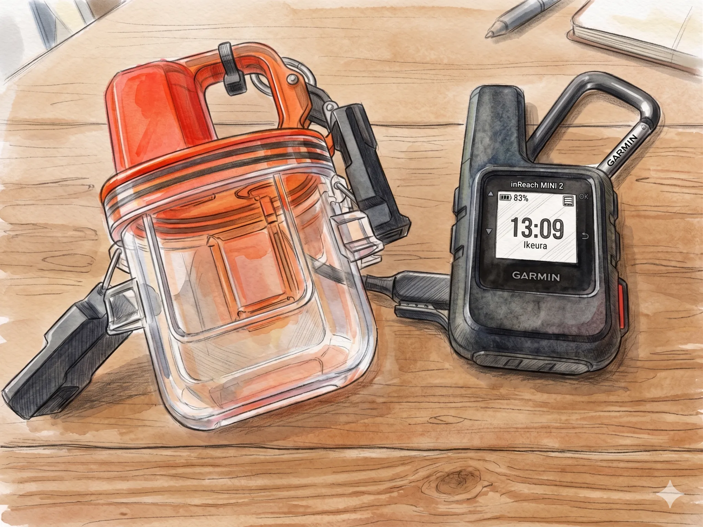
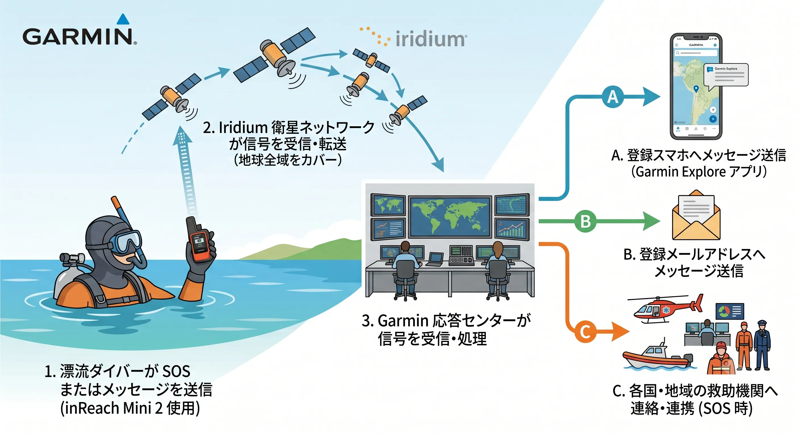

The road Orz passed by 2026 年 06 月
06 月 17 日 ( 水 )
Dive #168 漂流対策電子デバイス (2) Garmin inReach Mini 2 まとめ
前回の SEAKER-L3 に続き、地球全球をほぼサポートする Iridium 衛星ネットワークを利用する Garmin inReach Mini 2 を取り上げます。
ただし inReach シリーズであっても LTE のみサポートしている fēnix 8 Pro、水中に持ち込み可能なハウジングが発売されていない GPSMAP H1i Plus ならびにその他製造終了製品については今回は取り上げません。
1. 概要

- 製品シリーズ名:
- inReach
- 問い合わせ先:
- Garmin
- サービスエリア:
- 地球全域
- 通信方式:
- Iridium 衛星ネットワーク
- メッセージ通知先:
- スマホアプリまたは Email (つまり Internet)
- 特徴
-
- サービスエリアは Iridium 衛星ネットワーク使用のため地球全球をサポート
- 上空の視界が十分に確保できる環境であれば、地球上のほぼ全域で通信が可能
- 無線使用免許、無線基地局免許とも Garmin による包括免許によりユーザは取得不要
- IPX7 の防水機能
- 別売の inReach Mini Dive Case を使うことで水深 -100m まで耐水圧
- 1 メッセージのサイズ 160 Byte (1280 bit)
- スマホアプリ Garmin Explore アプリにて、携帯者の現在位置を 10 分おきに知ることができる (Premium プランだと 2 分おき)
- SOS メッセージは Garmin 応答センターが受信すると同センターから救助組織へ転送連絡
2. サービス提供エリア
Iridium 衛星ネットワークサービス域 (地球全球)。
3. 機能
詳細は公式サイトならびにオンラインマニュアルを参照してください。
3.1 インタラクティブ SOS アラート
SOS メッセージは Garmin 応答センターに送信されます。Garmin 応答センターは利用者の登録情報や位置情報を確認し、必要に応じて各国・各地域の救助機関との調整を開始します。また登録済み連絡先には通知が送信されます。
3.2 位置情報共有
MapShareを使用したり、位置情報付きでメッセージを送ることで、自宅にいる家族に現在地を共有することができます。
3.3 双方向メッセージング
自宅にいる人とテキストメッセージを交換したり、SNSに投稿したり、inReach同士で連絡を取り合うことができます。
4. アプリ
5. 大まかな仕組み

Garmin inReach Mini 2 から出た信号は Iridium 衛星ネットワークの人工衛星に受信されます。受信された信号は Iridium 衛星ネットワークを通じて Garmin 応答センターに送られ、必要な処理が行われて登録されているスマホに向けて配信、また必要に応じて各国・各地域の救助機関との連携が行われます。
ボート上にインターネット接続可能なスマートフォンがあり、Garmin Explore アプリが利用できる状態で、なおかつ Garmin inReach Mini 2 とペアリング済みであれば「浮上したから拾ってーっ」ってことも可能です。もちろんメールを使ったメッセージングも可能ですから、メールを使うならペアリングの手間はなくなります。
SOS メッセージを発信すると先に述べたように Garmin 応答センターからペアリングされたスマホへのメッセージだけでなく、登録メールアドレス宛にもメッセージが送られます。救難要請メールを受信した人は、必要に応じて海上保安庁やダイビングサービスなどへ状況を伝え、救助活動を支援することができます。
6. inReach の限界
- 通信にはアンテナが大気中に出ている必要があり、水中から直接通信することはできません。
- 衛星メッセージなので LINE や携帯電話のようなリアルタイム通信ではなく、数十秒から数分程度の遅延が発生する場合があります。
- 端末購入費だけでなく月額契約が必要になります。
- SOS を送信してもすぐに救助機関による救助が始まるわけではなく、まずは遭難の事実確認と調整が入ります。
- 漂流を防ぐ装置ではなく、「漂流してしまった後に、自分の位置と状況を伝えるための装置」となります。
- スマートフォンが利用できなくても基本的なメッセージ送信や SOS 発信は可能ですが、長文入力や地図表示などの利便性は低下します。
- スマートフォンが携帯回線や Wi-Fi に接続できない環境では、Garmin Explore アプリやメール経由での通知確認ができません。
- Garmin inReach Mini 2 とボート上のスマホがペアリングされていない場合、メールでメッセージを送ることになるので、ピックアップのレスポンスが遅れます。
- ダイビングに携帯するには別売アクセサリーの耐水圧ケース inReach Mini Dive Case が必要です。
- 漂流後にボートとの通信手段を確保できる可能性は高まりますが、ボート側が Garmin Explore アプリを常時監視しているとは限らず、運用方法によって実効性は大きく変わります。
- Category :
- #Records of Orz's Road
- #ダイビング
- #スクーバダイビング
- #スキンダイビング
- #フリーダイビング
- #テクニカルダイビング
- #スノーケリング
- #Garmin
- #inReach
- #漂流事故対策